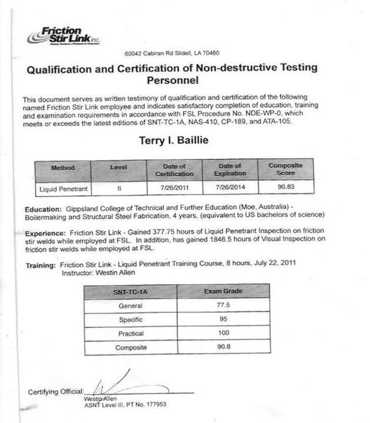

Codecademy Certificates
Below are all the certifications I have currently recieved since enrolling in the pro courses at Codecademy.
Currently I am working on the Front End Engineer Career Path.
Learn The Command Line

Learn CSS- Beginner

Learn CSS - Intermediate

Learn HTML

Learn Python3

Learn Build a Webpage with HTML, CSS and GitHub Pages

Learn Java Script - Beginner
Weld Inspection Certificates
These are my Certifications that I held as a Quality Control Supervisor and Weld Inspector. Because I no longer work for the company they have not be renewed, However my quantity of hours in method stand at over 13K in Visual Inspection and over 9K in Penetrant Inspection both at Level 2.
Penetrant Testing Level II

Visual Testing Level II

Boilermaker and SSF Certificate
This is the certification that I completed my 4 year college Apprenticeship for Boilermaker and Structural Steel Fabrication.